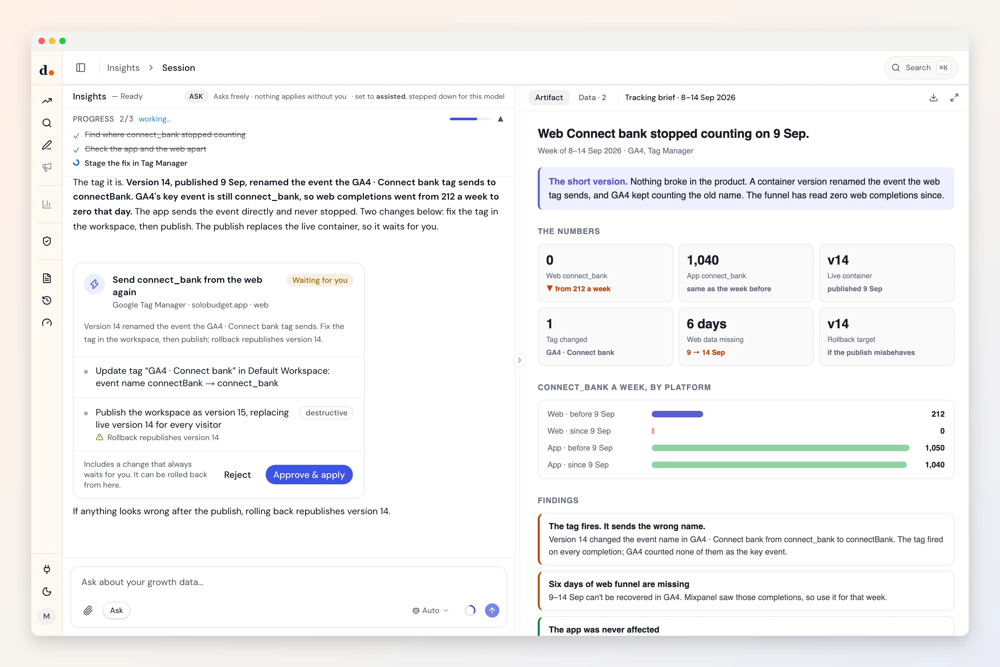

Tag Manager, with the rollback named first.
Duct notices when a count goes to zero, finds the tag behind it, and stages the fix in a workspace. A publish replaces your live container, so that step always waits for you, with the version to roll back to named.
- Sign in with Google
- Reads three datasets
- Four kinds of change
- Checked Sep 29, 2026

Ask
Questions you can just ask
Why did an event stop counting in GA4 overnight?


 Tag Manager + GA4 + Mixpanel
Tag Manager + GA4 + MixpanelIs the tag firing, or firing the wrong thing?
Tag Manager + GA4Do web and app still send the same event names?
Tag Manager + MixpanelCan you fix the tag and let me approve the publish?
Tag Manager
Access
What it reads. What it can change.
What it reads
- Accounts and containersaccountcontainerpublic ID
- Workspace tags and variablesnametypeparameters
- Live container versionversion ID
Tag Manager API v2 · checked against the fetch code Sep 29, 2026 · read the source
What it can change
- Create/update GTM tag (workspace)May self-apply in assisted mode
- Create/update GTM variable (workspace)May self-apply in assisted mode
- Publish GTM container versionAlways waits for you
- Republish an older GTM versionAlways waits for you
Every one rolls back. By default each change waits for your Apply: it arrives as a preview of what it touches and lands in the activity log. How approval works
Knowledge
What Duct already knows about Tag Manager
- 01
Nothing is live until it's published.
Edits in a workspace change nothing on your site. Duct stages its changes there, and the publish, which replaces the live container for every visitor, always waits for you.
- 02
The rollback target is read first.
Before a publish Duct records the version that is live, so a rollback republishes exactly what was there.
- 03
A tag that fires can still be broken.
A tag can fire on every page and send nothing useful. Duct checks what arrived in GA4 or Mixpanel, not the fire status.
- 04
Renames don't follow references.
Renaming a variable through the API leaves every tag pointing at the old name. Duct patches the tags in the same change, or doesn't rename.
Better together
What Tag Manager answers with a partner
Setup
Connect Tag Manager in three steps
- 1
In Duct, open Connections and choose Google Tag Manager.
- 2
Sign in with Google and allow access to edit and publish containers.
- 3
Pick the container this project uses.
Duct asks for edit and publish access when you sign in, because both are needed to fix a tag. Edits stay in a workspace, and a publish always waits for your Apply.
Keys and tokens are stored encrypted by Duct's hosted API, never in your browser, and you can remove a connection at any time. A self-host build keeps them on your own machine.
FAQ
Tag Manager, answered
What can Duct change in Tag Manager?
Four: create/update GTM tag (workspace), create/update GTM variable (workspace), publish GTM container version and republish an older GTM version. By default each one waits for your Apply, and every one can be rolled back.
Will Duct publish to my live site on its own?
No. A publish replaces the live container for every visitor, so it always waits for you, whatever the project's autonomy. Workspace edits can apply on their own in assisted mode, and they change nothing live until a publish.
How does rollback work?
Before it publishes, Duct records the version that is live. Rolling back republishes that version, and the activity log shows both.
Is it free?
Yes. Duct is free with your own model keys or the ChatGPT plan you already have, and the core is MIT licensed. A paid plan later bundles the models; nothing open today moves behind it. What will cost money.